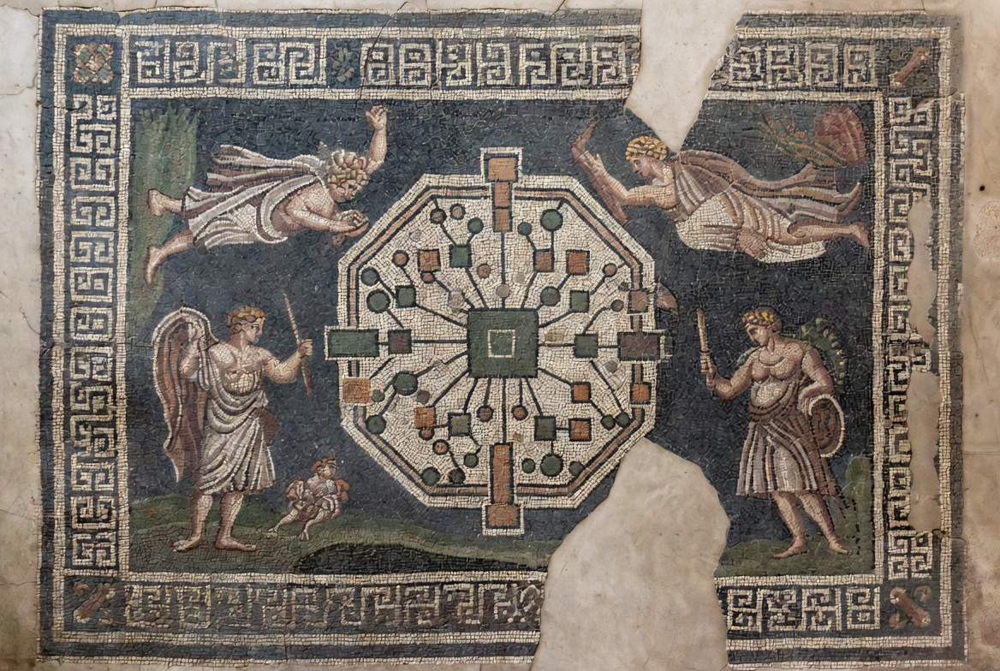
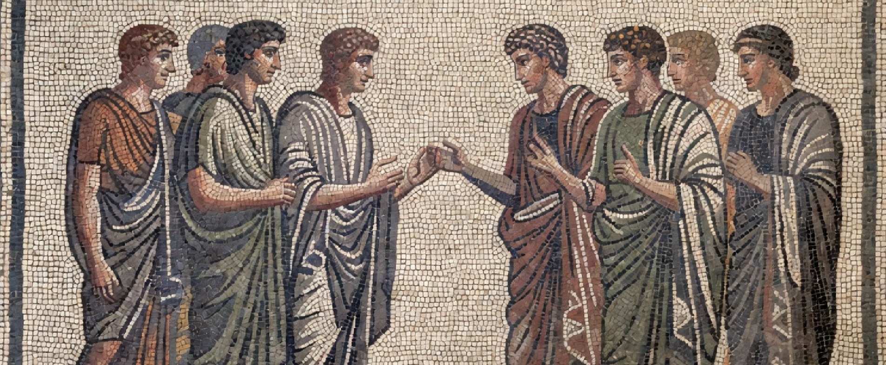
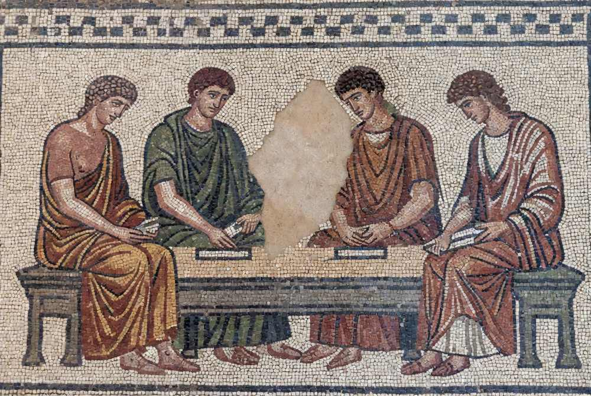

01
Understand
Map how work actually happens. Identify people, processes, systems and the real constraints.
We help organisations understand how people actually work, where technology can remove friction, and what needs to change for people to become more capable.
Leaders know technology needs to change how work gets done, but often do not know where it belongs.
Meanwhile, the people expected to use it can experience new technology as friction, surveillance, complexity or a threat to the work they value.

People, tools, relationships and environments form one system. Change one part and the others move with it.
A new system can add complexity. An automated process can remove judgement from the people who need it. An AI tool can become another interface to manage.
We start with the organisation, not the technology. We understand the work, the people and the system around them, then determine where technology can genuinely make a difference.
We work across leadership, teams and technology to understand what is happening now, identify where capability is being lost, and design the changes that let people spend more time doing the work they are actually good at.
Four movements, from seeing the work clearly to embedding the capability that makes change last.
Map how work actually happens. Identify people, processes, systems and the real constraints.
Find the relationships, bottlenecks and opportunities across the organisation.
Redesign the work and determine where technology creates leverage.
Build, implement and embed the systems that make it work.
See how the organisation actually works before proposing what should change.
Bring together the people, information, decisions and systems that shape the work.
Reorganise the system around human strengths, removing friction without removing judgement.
Put technology in the right places so people have better information, better tools and more time for valuable work.

Usually, the organisation already knows something needs to change. The question is how to change it without losing the people and capabilities that made the organisation work in the first place.
Growth has created layers, handoffs and processes that make good people less effective.
There are tools everywhere, but no clear view of where they belong or how work should change around them.
Knowledge is fragmented, information is hard to find and valuable attention is consumed by avoidable work.
The organisation needs more than a recommendation. It needs someone who can carry the change from understanding through implementation.
Real examples will live here. Each one should show the problem, what changed and what became possible as a result.
[Describe the organisational problem, the intervention and the resulting change.]
CLIENT / SECTOR / OUTCOME[Describe what people were struggling with, what was built or changed and what improved.]
CLIENT / SECTOR / OUTCOME[Name, role and organisation to be added.]
CLIENT VOICE[Describe a solution that emerged from the service and became reusable technology.]
CLIENT / PRODUCT / OUTCOMEEvery organisation is a system of people making decisions, solving problems, sharing knowledge and adapting to change. Technology is one of the tools that can extend what that system is capable of.
Quartiere sits at the boundary between people, organisations and technology. We use whatever tools are useful without making technology the subject of the company.

We start by understanding the work before deciding what to build.
Tell us what your organisation is trying to understand, build or change.